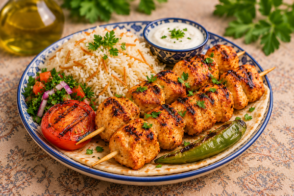
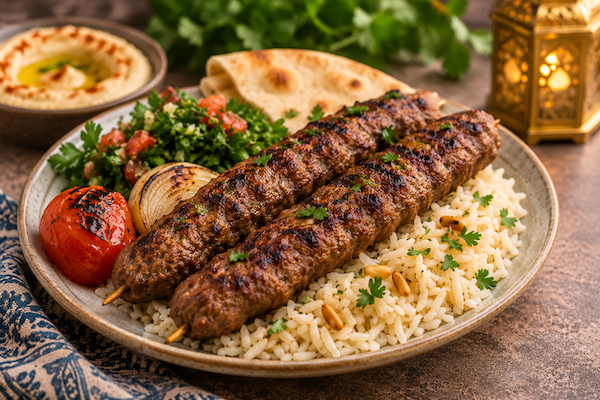
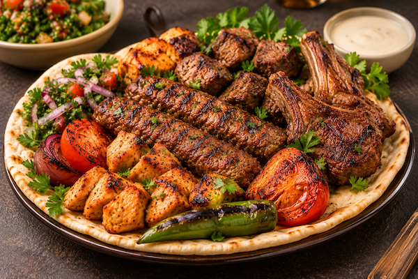

 Shish Tawook Marinerade grillade kycklingspett serverade med ris, sallad och vitlökssås. 179 kr
 Kebab Grillade köttfärsspett med persilja och kryddor, serverade med ris och sallad. 189 kr
 Mixed Grill En blandning av grillad kyckling, kafta och lamm med ris och vitlökssås. 249 kr